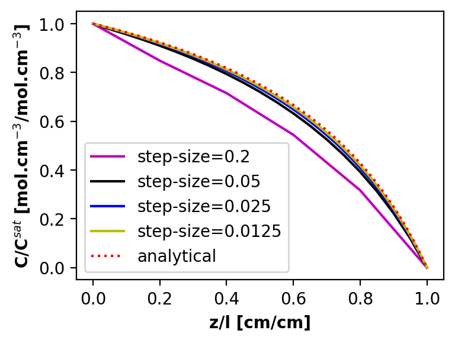

<!DOCTYPE html>


<html lang="en" data-content_root="../../" >

  <head>
    <meta charset="utf-8" />
    <meta name="viewport" content="width=device-width, initial-scale=1.0" /><meta name="viewport" content="width=device-width, initial-scale=1" />

    <title>Solving Fick’s Second Law Using Numeric Integration &#8212; Data and Computing for Chemical Engineers</title>
  
  
  
  <script data-cfasync="false">
    document.documentElement.dataset.mode = localStorage.getItem("mode") || "";
    document.documentElement.dataset.theme = localStorage.getItem("theme") || "";
  </script>
  
  <!-- Loaded before other Sphinx assets -->
  <link href="../../_static/styles/theme.css?digest=dfe6caa3a7d634c4db9b" rel="stylesheet" />
<link href="../../_static/styles/bootstrap.css?digest=dfe6caa3a7d634c4db9b" rel="stylesheet" />
<link href="../../_static/styles/pydata-sphinx-theme.css?digest=dfe6caa3a7d634c4db9b" rel="stylesheet" />

  
  <link href="../../_static/vendor/fontawesome/6.5.2/css/all.min.css?digest=dfe6caa3a7d634c4db9b" rel="stylesheet" />
  <link rel="preload" as="font" type="font/woff2" crossorigin href="../../_static/vendor/fontawesome/6.5.2/webfonts/fa-solid-900.woff2" />
<link rel="preload" as="font" type="font/woff2" crossorigin href="../../_static/vendor/fontawesome/6.5.2/webfonts/fa-brands-400.woff2" />
<link rel="preload" as="font" type="font/woff2" crossorigin href="../../_static/vendor/fontawesome/6.5.2/webfonts/fa-regular-400.woff2" />

    <link rel="stylesheet" type="text/css" href="../../_static/pygments.css?v=fa44fd50" />
    <link rel="stylesheet" type="text/css" href="../../_static/styles/sphinx-book-theme.css?v=a3416100" />
    <link rel="stylesheet" type="text/css" href="../../_static/togglebutton.css?v=13237357" />
    <link rel="stylesheet" type="text/css" href="../../_static/copybutton.css?v=76b2166b" />
    <link rel="stylesheet" type="text/css" href="../../_static/mystnb.4510f1fc1dee50b3e5859aac5469c37c29e427902b24a333a5f9fcb2f0b3ac41.css" />
    <link rel="stylesheet" type="text/css" href="../../_static/sphinx-thebe.css?v=4fa983c6" />
    <link rel="stylesheet" type="text/css" href="../../_static/sphinx-design.min.css?v=87e54e7c" />
  
  <!-- Pre-loaded scripts that we'll load fully later -->
  <link rel="preload" as="script" href="../../_static/scripts/bootstrap.js?digest=dfe6caa3a7d634c4db9b" />
<link rel="preload" as="script" href="../../_static/scripts/pydata-sphinx-theme.js?digest=dfe6caa3a7d634c4db9b" />
  <script src="../../_static/vendor/fontawesome/6.5.2/js/all.min.js?digest=dfe6caa3a7d634c4db9b"></script>

    <script src="../../_static/documentation_options.js?v=9eb32ce0"></script>
    <script src="../../_static/doctools.js?v=9a2dae69"></script>
    <script src="../../_static/sphinx_highlight.js?v=dc90522c"></script>
    <script src="../../_static/clipboard.min.js?v=a7894cd8"></script>
    <script src="../../_static/copybutton.js?v=f281be69"></script>
    <script src="../../_static/scripts/sphinx-book-theme.js?v=887ef09a"></script>
    <script>let toggleHintShow = 'Click to show';</script>
    <script>let toggleHintHide = 'Click to hide';</script>
    <script>let toggleOpenOnPrint = 'true';</script>
    <script src="../../_static/togglebutton.js?v=4a39c7ea"></script>
    <script>var togglebuttonSelector = '.toggle, .admonition.dropdown';</script>
    <script src="../../_static/design-tabs.js?v=f930bc37"></script>
    <script>const THEBE_JS_URL = "https://unpkg.com/thebe@0.8.2/lib/index.js"; const thebe_selector = ".thebe,.cell"; const thebe_selector_input = "pre"; const thebe_selector_output = ".output, .cell_output"</script>
    <script async="async" src="../../_static/sphinx-thebe.js?v=c100c467"></script>
    <script>var togglebuttonSelector = '.toggle, .admonition.dropdown';</script>
    <script>const THEBE_JS_URL = "https://unpkg.com/thebe@0.8.2/lib/index.js"; const thebe_selector = ".thebe,.cell"; const thebe_selector_input = "pre"; const thebe_selector_output = ".output, .cell_output"</script>
    <script>window.MathJax = {"options": {"processHtmlClass": "tex2jax_process|mathjax_process|math|output_area"}}</script>
    <script defer="defer" src="https://cdn.jsdelivr.net/npm/mathjax@3/es5/tex-mml-chtml.js"></script>
    <script>DOCUMENTATION_OPTIONS.pagename = 'notebooks/contrib/Ficks_Law';</script>
    <link rel="index" title="Index" href="../../genindex.html" />
    <link rel="search" title="Search" href="../../search.html" />
    <link rel="next" title="Stochastic Simulation of Chemical Reactions" href="Stochastic-Kinetics.html" />
    <link rel="prev" title="Non-Isothermal Packed Bed Reactor" href="Non_Isothermal_PBR.html" />
  <meta name="viewport" content="width=device-width, initial-scale=1"/>
  <meta name="docsearch:language" content="en"/>
  </head>
  
  
  <body data-bs-spy="scroll" data-bs-target=".bd-toc-nav" data-offset="180" data-bs-root-margin="0px 0px -60%" data-default-mode="">

  
  
  <div id="pst-skip-link" class="skip-link d-print-none"><a href="#main-content">Skip to main content</a></div>
  
  <div id="pst-scroll-pixel-helper"></div>
  
  <button type="button" class="btn rounded-pill" id="pst-back-to-top">
    <i class="fa-solid fa-arrow-up"></i>Back to top</button>

  
  <input type="checkbox"
          class="sidebar-toggle"
          id="pst-primary-sidebar-checkbox"/>
  <label class="overlay overlay-primary" for="pst-primary-sidebar-checkbox"></label>
  
  <input type="checkbox"
          class="sidebar-toggle"
          id="pst-secondary-sidebar-checkbox"/>
  <label class="overlay overlay-secondary" for="pst-secondary-sidebar-checkbox"></label>
  
  <div class="search-button__wrapper">
    <div class="search-button__overlay"></div>
    <div class="search-button__search-container">
<form class="bd-search d-flex align-items-center"
      action="../../search.html"
      method="get">
  <i class="fa-solid fa-magnifying-glass"></i>
  <input type="search"
         class="form-control"
         name="q"
         id="search-input"
         placeholder="Search this book..."
         aria-label="Search this book..."
         autocomplete="off"
         autocorrect="off"
         autocapitalize="off"
         spellcheck="false"/>
  <span class="search-button__kbd-shortcut"><kbd class="kbd-shortcut__modifier">Ctrl</kbd>+<kbd>K</kbd></span>
</form></div>
  </div>

  <div class="pst-async-banner-revealer d-none">
  <aside id="bd-header-version-warning" class="d-none d-print-none" aria-label="Version warning"></aside>
</div>

  
    <header class="bd-header navbar navbar-expand-lg bd-navbar d-print-none">
    </header>
  

  <div class="bd-container">
    <div class="bd-container__inner bd-page-width">
      
      
      
      <div class="bd-sidebar-primary bd-sidebar">
        

  
  <div class="sidebar-header-items sidebar-primary__section">
    
    
    
    
  </div>
  
    <div class="sidebar-primary-items__start sidebar-primary__section">
        <div class="sidebar-primary-item">

  
    
  

<a class="navbar-brand logo" href="../../intro.html">
  
  
  
  
  
    
    
      
    
    
    
    <script>document.write(``);</script>
  
  
</a></div>
        <div class="sidebar-primary-item">

 <script>
 document.write(`
   <button class="btn search-button-field search-button__button" title="Search" aria-label="Search" data-bs-placement="bottom" data-bs-toggle="tooltip">
    <i class="fa-solid fa-magnifying-glass"></i>
    <span class="search-button__default-text">Search</span>
    <span class="search-button__kbd-shortcut"><kbd class="kbd-shortcut__modifier">Ctrl</kbd>+<kbd class="kbd-shortcut__modifier">K</kbd></span>
   </button>
 `);
 </script></div>
        <div class="sidebar-primary-item"><nav class="bd-links bd-docs-nav" aria-label="Main">
    <div class="bd-toc-item navbar-nav active">
        
        <ul class="nav bd-sidenav bd-sidenav__home-link">
            <li class="toctree-l1">
                <a class="reference internal" href="../../intro.html">
                    Data and Computing for Engineers
                </a>
            </li>
        </ul>
        <p aria-level="2" class="caption" role="heading"><span class="caption-text">Python Programming</span></p>
<ul class="nav bd-sidenav">
<li class="toctree-l1 has-children"><a class="reference internal" href="../01/Python-Primer.html">1. Python Primer</a><details><summary><span class="toctree-toggle" role="presentation"><i class="fa-solid fa-chevron-down"></i></span></summary><ul>
<li class="toctree-l2"><a class="reference internal" href="../01/Jupyter-Notebooks.html">1.1. Welcome to Jupyter Notebooks and Vocareum</a></li>
<li class="toctree-l2"><a class="reference internal" href="../01/Python-Basics-I-Variables-Strings-Bugs.html">1.2. Python Basics I: Variables, Strings, and Bugs</a></li>
<li class="toctree-l2"><a class="reference internal" href="../01/Flow-control.html">1.3. Python Basics II: Loopy Logic</a></li>
<li class="toctree-l2"><a class="reference internal" href="../01/Python-Basics-III-Lists-Dictionaries-Enumeration.html">1.4. Python Basics III: Lists, Dictionaries, and Enumeration</a></li>
<li class="toctree-l2"><a class="reference internal" href="../01/Functions-and-Scope.html">1.5. Functions and Scope</a></li>
<li class="toctree-l2"><a class="reference internal" href="../01/Recursion.html">1.6. Recursion</a></li>
<li class="toctree-l2"><a class="reference internal" href="../01/Pseudocode.html">1.7. Pseudocode</a></li>
<li class="toctree-l2"><a class="reference internal" href="../01/Example-High-Low-Game.html">1.8. High/Low Guess My Number Game</a></li>
<li class="toctree-l2"><a class="reference internal" href="../01/Modules-and-Files.html">1.9. Modules and Files</a></li>
<li class="toctree-l2"><a class="reference internal" href="../01/NumPy.html">1.10. Linear Algebra with Numpy and Scipy</a></li>
<li class="toctree-l2"><a class="reference internal" href="../01/Matplotlib.html">1.11. Visualization with matplotlib</a></li>
<li class="toctree-l2"><a class="reference internal" href="../01/Pandas.html">1.12. Manipulating Data with Pandas</a></li>
<li class="toctree-l2"><a class="reference internal" href="../01/Functions-as-Arguments.html">1.13. Functions as Arguments</a></li>
<li class="toctree-l2"><a class="reference internal" href="../01/Testing-and-Debugging.html">1.14. Testing and Debugging in Python</a></li>
<li class="toctree-l2"><a class="reference internal" href="../01/Publication-Quality-Figures.html">1.15. Preparing Publication Quality Figures in Python</a></li>
</ul>
</details></li>
<li class="toctree-l1"><a class="reference internal" href="../02/advanced_python.html">2. Advanced Python</a></li>
</ul>
<p aria-level="2" class="caption" role="heading"><span class="caption-text">Numerical Methods</span></p>
<ul class="nav bd-sidenav">
<li class="toctree-l1 has-children"><a class="reference internal" href="../03/linear_algebra.html">3. Linear Algebra Primer</a><details><summary><span class="toctree-toggle" role="presentation"><i class="fa-solid fa-chevron-down"></i></span></summary><ul>
<li class="toctree-l2"><a class="reference internal" href="../03/chapter1.html">3.1. Chapter 1: Math Fundamentals</a></li>
<li class="toctree-l2"><a class="reference internal" href="../03/chapter2.html">3.2. Chapter 2: Intro to Linear Algebra</a></li>
<li class="toctree-l2"><a class="reference internal" href="../03/chapter3.html">3.3. Chapter 3: Computational linear algebra</a></li>
<li class="toctree-l2"><a class="reference internal" href="../03/chapter4.html">3.4. Chapter 4: Geometric Aspects of Linear Algebra</a></li>
<li class="toctree-l2"><a class="reference internal" href="../03/chapter5.html">3.5. Chapter 5: Linear Transformations</a></li>
<li class="toctree-l2"><a class="reference internal" href="../03/chapter6.html">3.6. Chapter 6: Theoretical Linear Algebra</a></li>
</ul>
</details></li>
<li class="toctree-l1 has-children"><a class="reference internal" href="../04/linear_algebra.html">4. Applied Linear Algebra</a><details><summary><span class="toctree-toggle" role="presentation"><i class="fa-solid fa-chevron-down"></i></span></summary><ul>
<li class="toctree-l2"><a class="reference internal" href="../04/Modeling-Systems-of-Linear-Equations.html">4.1. Modeling Systems of Linear Equations</a></li>
<li class="toctree-l2"><a class="reference internal" href="../04/Gauss-Elimination.html">4.2. Gaussian Elimination</a></li>
<li class="toctree-l2"><a class="reference internal" href="../04/Invertible-Matrix-Theorem-and-Gauss-Example.html">4.3. Invertible Matrix Theorem and Gaussian Elimination Example</a></li>
<li class="toctree-l2"><a class="reference internal" href="../04/LU-Decomposition.html">4.4. LU Decomposition</a></li>
<li class="toctree-l2"><a class="reference internal" href="../04/Condition-Number.html">4.5. Errors in Linear Systems</a></li>
<li class="toctree-l2"><a class="reference internal" href="../04/Example-Atomic-Mass-Balances.html">4.6. Example: Mass Balances and Linear Algebra</a></li>
<li class="toctree-l2"><a class="reference internal" href="../04/Linear-Algebra-in-Numpy.html">4.7. Linear Algebra Review and SciPy Basics</a></li>
</ul>
</details></li>
<li class="toctree-l1 has-children"><a class="reference internal" href="../05/algorithms.html">5. Algorithm Building Blocks</a><details><summary><span class="toctree-toggle" role="presentation"><i class="fa-solid fa-chevron-down"></i></span></summary><ul>
<li class="toctree-l2"><a class="reference internal" href="../05/Taylor-Series.html">5.1. Taylor Series Approximations</a></li>
<li class="toctree-l2"><a class="reference internal" href="../05/Finite-Difference.html">5.2. Finite Difference Derivative Approximations</a></li>
<li class="toctree-l2"><a class="reference internal" href="../05/Example-Heating-a-Metal-Slab.html">5.3. Example: Heating a Metal Slab</a></li>
</ul>
</details></li>
<li class="toctree-l1 has-children"><a class="reference internal" href="../06/nonlinear_systems.html">6. Nonlinear Systems of Equations</a><details><summary><span class="toctree-toggle" role="presentation"><i class="fa-solid fa-chevron-down"></i></span></summary><ul>
<li class="toctree-l2"><a class="reference internal" href="../06/Modeling-Systems-of-Nonlinear-Equations.html">6.1. Modeling Systems of Nonlinear Equations: Flash Calculation Example</a></li>
<li class="toctree-l2"><a class="reference internal" href="../06/Newton-Raphson-Method-in-One-Dimension.html">6.2. Newton-Raphson Method in One Dimension</a></li>
<li class="toctree-l2"><a class="reference internal" href="../06/More-Newton-Type-Methods.html">6.3. More Newton-Type Methods</a></li>
<li class="toctree-l2"><a class="reference internal" href="../06/Convergence-Analysis-for-Newton-Raphson-Methods.html">6.4. Convergence Analysis for Newton-Raphson Methods</a></li>
<li class="toctree-l2"><a class="reference internal" href="../06/Newton-Raphson-Methods-for-Systems-of-Equations.html">6.5. Newton-Raphson Methods for Systems of Equations</a></li>
<li class="toctree-l2"><a class="reference internal" href="../06/Newton-Methods-in-Scipy.html">6.6. Newton Methods in Scipy</a></li>
</ul>
</details></li>
<li class="toctree-l1 has-children"><a class="reference internal" href="../07/integration.html">7. Numeric Integration</a><details><summary><span class="toctree-toggle" role="presentation"><i class="fa-solid fa-chevron-down"></i></span></summary><ul>
<li class="toctree-l2"><a class="reference internal" href="../07/Intro-and-Newton-Cotes.html">7.1. Introduction and Newton-Cotes</a></li>
<li class="toctree-l2"><a class="reference internal" href="../07/Gauss-Quadrature.html">7.2. Gauss Quadrature</a></li>
<li class="toctree-l2"><a class="reference internal" href="../07/Scipy-Library-Adaptive-Methods-for-Newton-Cotes-and-Gauss-Quadrature.html">7.3. Scipy Library: Adaptive Methods for Newton-Cotes and Gauss Quadrature</a></li>
<li class="toctree-l2"><a class="reference internal" href="../07/Application-Inertial-Navigation-Systems.html">7.4. Application: Inertial Navigation Systems</a></li>
<li class="toctree-l2"><a class="reference internal" href="../07/Forward-and-Backward-Euler.html">7.5. Forward and Backward Euler Methods</a></li>
<li class="toctree-l2"><a class="reference internal" href="../07/Trapezoid-Rule.html">7.6. Crank-Nicolson (Trapezoid Rule)</a></li>
<li class="toctree-l2"><a class="reference internal" href="../07/Stability-Analysis.html">7.7. Stability Analysis</a></li>
<li class="toctree-l2"><a class="reference internal" href="../07/Explicit-Runge-Kutta.html">7.8. Explicit Range Kutta Method</a></li>
<li class="toctree-l2"><a class="reference internal" href="../07/Systems-of-Differential-Equations-and-Scipy.html">7.9. Systems of Differential Equations and Scipy</a></li>
<li class="toctree-l2"><a class="reference internal" href="../07/Example-Reaction-Rates.html">7.10. Example: Reaction Rates</a></li>
</ul>
</details></li>
<li class="toctree-l1 has-children"><a class="reference internal" href="../08/optimization.html">8. Continuous Optimization</a><details><summary><span class="toctree-toggle" role="presentation"><i class="fa-solid fa-chevron-down"></i></span></summary><ul>
<li class="toctree-l2"><a class="reference internal" href="../08/Pyomo-Basics.html">8.1. Pyomo Basics</a></li>
<li class="toctree-l2"><a class="reference internal" href="../08/Electricity-Market-Optimization.html">8.2. Electricity Market Optimization</a></li>
<li class="toctree-l2"><a class="reference internal" href="../08/Flash-Calculations-in-Pyomo.html">8.3. Flash Calculations in Pyomo</a></li>
</ul>
</details></li>
</ul>
<p aria-level="2" class="caption" role="heading"><span class="caption-text">Data Analysis</span></p>
<ul class="nav bd-sidenav">
<li class="toctree-l1 has-children"><a class="reference internal" href="../09/stats.html">9. Descriptive Statistics and Visualization</a><details><summary><span class="toctree-toggle" role="presentation"><i class="fa-solid fa-chevron-down"></i></span></summary><ul>
<li class="toctree-l2"><a class="reference internal" href="../09/Sampling.html">9.1. Sampling</a></li>
<li class="toctree-l2"><a class="reference internal" href="../09/Summary-Statistics.html">9.2. Summary Statistics</a></li>
<li class="toctree-l2"><a class="reference internal" href="../09/Visualizing-Data.html">9.3. Visualizing Data</a></li>
</ul>
</details></li>
<li class="toctree-l1 has-children"><a class="reference internal" href="../10/probability.html">10. Probability Theory</a><details><summary><span class="toctree-toggle" role="presentation"><i class="fa-solid fa-chevron-down"></i></span></summary><ul>
<li class="toctree-l2"><a class="reference internal" href="../10/Probability-Basics.html">10.1. Basic Ideas of Probability</a></li>
<li class="toctree-l2"><a class="reference internal" href="../10/Random-Variables.html">10.2. Random Variables</a></li>
<li class="toctree-l2"><a class="reference internal" href="../10/Jointly-Distributed-Random-Variables.html">10.3. Jointly Distributed Random Variables</a></li>
<li class="toctree-l2"><a class="reference internal" href="../10/Jointly-Continuous-Random-Variables.html">10.4. Jointly Continuous Random Variables</a></li>
<li class="toctree-l2"><a class="reference internal" href="../10/Practice-Problems.html">10.5. Practice Problems</a></li>
</ul>
</details></li>
<li class="toctree-l1 has-children"><a class="reference internal" href="../11/distributions.html">11. Common Probability Distributions</a><details><summary><span class="toctree-toggle" role="presentation"><i class="fa-solid fa-chevron-down"></i></span></summary><ul>
<li class="toctree-l2"><a class="reference internal" href="../11/Bernoulli-Probability-Distribution.html">11.1. Bernoulli Probability Distribution</a></li>
<li class="toctree-l2"><a class="reference internal" href="../11/Binomial-Probability-Distribtuion.html">11.2. Binomial Probability Distributions</a></li>
<li class="toctree-l2"><a class="reference internal" href="../11/Poisson-Probability-Distribution.html">11.3. Poisson Probability Distributions</a></li>
<li class="toctree-l2"><a class="reference internal" href="../11/Normal-Probability-Distribution.html">11.4. Normal Probability Distributions</a></li>
<li class="toctree-l2"><a class="reference internal" href="../11/Common-Probability-Distributions-Summary.html">11.5. Summary</a></li>
</ul>
</details></li>
<li class="toctree-l1 has-children"><a class="reference internal" href="../12/uncertainty.html">12. Uncertainty and Error Propagation</a><details><summary><span class="toctree-toggle" role="presentation"><i class="fa-solid fa-chevron-down"></i></span></summary><ul>
<li class="toctree-l2"><a class="reference internal" href="../12/Measurement-Error.html">12.1. Measurement Error</a></li>
<li class="toctree-l2"><a class="reference internal" href="../12/Error-Propagation.html">12.2. Error Propagation</a></li>
<li class="toctree-l2"><a class="reference internal" href="../12/Measuring-Flowrate-Example.html">12.3. Measuring Flowrate Example</a></li>
<li class="toctree-l2"><a class="reference internal" href="../12/Car-and-Incline-Example.html">12.4. Car and Incline Example</a></li>
<li class="toctree-l2"><a class="reference internal" href="../12/Simulation.html">12.5. Simulation</a></li>
<li class="toctree-l2"><a class="reference internal" href="../12/Monte-Carlo-Error-Propogation.html">12.6. Monte Carlo Error Propagation</a></li>
<li class="toctree-l2"><a class="reference internal" href="../12/Practice-Problems.html">12.7. Practice Problems</a></li>
</ul>
</details></li>
<li class="toctree-l1 has-children"><a class="reference internal" href="../13/inference.html">13. Statistical Inference</a><details><summary><span class="toctree-toggle" role="presentation"><i class="fa-solid fa-chevron-down"></i></span></summary><ul>
<li class="toctree-l2"><a class="reference internal" href="../13/Central-Limit-Theorem.html">13.1. Central Limit Theorem</a></li>
<li class="toctree-l2"><a class="reference internal" href="../13/Standard-Normal-Distribution.html">13.2. Standard Normal Distribution</a></li>
<li class="toctree-l2"><a class="reference internal" href="../13/Confidence-Intervals.html">13.3. Confidence Intervals</a></li>
<li class="toctree-l2"><a class="reference internal" href="../13/Students-t-Distribution.html">13.4. Student’s t-Distribution</a></li>
<li class="toctree-l2"><a class="reference internal" href="../13/Hypothesis-Testing-Basics.html">13.5. Hypothesis Testing Basics</a></li>
<li class="toctree-l2"><a class="reference internal" href="../13/Flavors-of-Hypothesis-Testing.html">13.6. Flavors of Hypothesis Testing</a></li>
<li class="toctree-l2"><a class="reference internal" href="../13/Type-I-and-Type-II-Errors.html">13.7. Type I and Type II Errors</a></li>
<li class="toctree-l2"><a class="reference internal" href="../13/Statistical-Power-Basics.html">13.8. Statistical Power Basics</a></li>
<li class="toctree-l2"><a class="reference internal" href="../13/Statistical-Power-in-Python.html">13.9. Statistical Power in Python</a></li>
<li class="toctree-l2"><a class="reference internal" href="../13/Statistical-Power-Practice-Problems.html">13.10. Statistical Power Practice Problems</a></li>
<li class="toctree-l2"><a class="reference internal" href="../13/Bootstrap-Confidence-Intervals.html">13.11. Bootstrap Confidence Intervals</a></li>
</ul>
</details></li>
<li class="toctree-l1 has-children"><a class="reference internal" href="../14/regression.html">14. Multivariate Linear Regression</a><details><summary><span class="toctree-toggle" role="presentation"><i class="fa-solid fa-chevron-down"></i></span></summary><ul>
<li class="toctree-l2"><a class="reference internal" href="../14/Correlation-Covariance-and-Independence.html">14.1. Correlation, Covariance, and Independence</a></li>
<li class="toctree-l2"><a class="reference internal" href="../14/Least-Squares-Line.html">14.2. Simple Least Squares</a></li>
<li class="toctree-l2"><a class="reference internal" href="../14/Ordinary-Least-Squares-Linear-Regression.html">14.3. Ordinary Least Squares Linear Regression</a></li>
<li class="toctree-l2"><a class="reference internal" href="../14/Residual-Analysis.html">14.4. Residual Analysis</a></li>
<li class="toctree-l2"><a class="reference internal" href="../14/Regression-Assumption-Examples.html">14.5. Regression Assumption Examples</a></li>
<li class="toctree-l2"><a class="reference internal" href="../14/Uncertainty-Analysis-and-Statistical-Inference.html">14.6. Uncertainty Analysis and Statistical Inference</a></li>
<li class="toctree-l2"><a class="reference internal" href="../14/Multivariate-Linear-Regression.html">14.7. Multivariate Linear Regression</a></li>
<li class="toctree-l2"><a class="reference internal" href="../14/Linear-Regression-Practice-Problems.html">14.8. Linear Regression Practice Problems</a></li>
</ul>
</details></li>
<li class="toctree-l1 has-children"><a class="reference internal" href="../15/advanced_regression.html">15. Nonlinear Regression</a><details><summary><span class="toctree-toggle" role="presentation"><i class="fa-solid fa-chevron-down"></i></span></summary><ul>
<li class="toctree-l2"><a class="reference internal" href="../15/Transformations-and-Linear-Regression.html">15.1. Transformations and Linear Regression</a></li>
<li class="toctree-l2"><a class="reference internal" href="../15/Weighted-Regression.html">15.2. Weighted Linear Regression</a></li>
<li class="toctree-l2"><a class="reference internal" href="../15/Nonlinear-Regression.html">15.3. Nonlinear Regression</a></li>
<li class="toctree-l2"><a class="reference internal" href="../15/Nonlinear-Regression-Practice-Problem.html">15.4. Nonlinear Regression Practice Problem</a></li>
<li class="toctree-l2"><a class="reference internal" href="../15/Monte-Carlo-Uncertainty-Analysis-for-Nonlinear-Regression.html">15.5. Monte Carlo Uncertainty Analysis for Nonlinear Regression</a></li>
<li class="toctree-l2"><a class="reference internal" href="../15/Nonlinear-Case-Study-Adsorptive-Membranes.html">15.6. Nonlinear Regression Case Study: Adsorptive Nanoporous Membranes</a></li>
</ul>
</details></li>
<li class="toctree-l1 has-children"><a class="reference internal" href="../16/design_of_experiments.html">16. Design of Experiments</a><details><summary><span class="toctree-toggle" role="presentation"><i class="fa-solid fa-chevron-down"></i></span></summary><ul>
<li class="toctree-l2"><a class="reference internal" href="../16/Reaction-MBDoE.html">16.1. Model-Based Design of Experiments</a></li>
</ul>
</details></li>
</ul>
<p aria-level="2" class="caption" role="heading"><span class="caption-text">Extra Information</span></p>
<ul class="current nav bd-sidenav">
<li class="toctree-l1 has-children"><a class="reference internal" href="../../fall2022/home.html">Fall 2022</a><details><summary><span class="toctree-toggle" role="presentation"><i class="fa-solid fa-chevron-down"></i></span></summary><ul>
<li class="toctree-l2"><a class="reference internal" href="../../fall2022/syllabus.html">Syllabus</a></li>
<li class="toctree-l2"><a class="reference internal" href="../../fall2022/schedule.html">Fall 2022 Schedule</a></li>
<li class="toctree-l2"><a class="reference internal" href="../../fall2022/project1.html">Project 1: Computating for Problem Solving (Fall 2022)</a></li>
<li class="toctree-l2"><a class="reference internal" href="../../fall2022/project2.html">Project 2: Data Analysis (Fall 2022)</a></li>
</ul>
</details></li>
<li class="toctree-l1 has-children"><a class="reference internal" href="../../fall2023/home.html">Fall 2023</a><details><summary><span class="toctree-toggle" role="presentation"><i class="fa-solid fa-chevron-down"></i></span></summary><ul>
<li class="toctree-l2"><a class="reference internal" href="../../fall2023/syllabus.html">Syllabus</a></li>
<li class="toctree-l2"><a class="reference internal" href="../../fall2023/schedule.html">Schedule</a></li>
<li class="toctree-l2"><a class="reference internal" href="../../fall2023/project.html">Semester Project</a></li>
<li class="toctree-l2"><a class="reference internal" href="../assignments/ProblemSet1_F23.html">Problem Set 1</a></li>
<li class="toctree-l2"><a class="reference internal" href="../assignments/ProblemSet2_F23.html">Problem Set 2</a></li>
<li class="toctree-l2"><a class="reference internal" href="../assignments/ProblemSet3_F23.html">Problem Set 3</a></li>
<li class="toctree-l2"><a class="reference internal" href="../assignments/ProblemSet4_F23.html">Problem Set 4</a></li>
<li class="toctree-l2"><a class="reference internal" href="../assignments/ProblemSet5_F23.html">Problem Set 5</a></li>
<li class="toctree-l2"><a class="reference internal" href="../assignments/ProblemSet6_F23.html">Problem Set 6</a></li>
</ul>
</details></li>
<li class="toctree-l1 current active has-children"><a class="reference internal" href="contribute.html">Contributed Examples</a><details open="open"><summary><span class="toctree-toggle" role="presentation"><i class="fa-solid fa-chevron-down"></i></span></summary><ul class="current">
<li class="toctree-l2"><a class="reference internal" href="Biotransport-Entrance-Length.html">Estimating the Entrance Length of Channel Flow</a></li>
<li class="toctree-l2"><a class="reference internal" href="Non_Isothermal_PBR.html">Non-Isothermal Packed Bed Reactor</a></li>
<li class="toctree-l2 current active"><a class="current reference internal" href="#">Solving Fick’s Second Law Using Numeric Integration</a></li>
<li class="toctree-l2"><a class="reference internal" href="Stochastic-Kinetics.html">Stochastic Simulation of Chemical Reactions</a></li>
<li class="toctree-l2"><a class="reference internal" href="Spaghettification.html">Spaghettification of the Magic School Bus</a></li>
<li class="toctree-l2"><a class="reference internal" href="Alcohol-Pharmacokinetics.html">Alcohol Pharmacokinetics and  Blood Alcohol Content % Modeling</a></li>
<li class="toctree-l2"><a class="reference internal" href="McCabe-Thiele.html">Plotting McCabe-Thiele diagram through computational methods</a></li>
<li class="toctree-l2"><a class="reference internal" href="Wastewater-Treatment-Mass-Balance.html">Example of Mass Balance Problem in Wastewater Treatment Units</a></li>
<li class="toctree-l2"><a class="reference internal" href="Filtration.html">Filtration of a Yeast Suspension</a></li>
<li class="toctree-l2"><a class="reference internal" href="Fraction_of_Molecular_Collisions.html">Calculating Fraction of Molecular Collisions</a></li>
</ul>
</details></li>
</ul>

    </div>
</nav></div>
    </div>
  
  
  <div class="sidebar-primary-items__end sidebar-primary__section">
  </div>
  
  <div id="rtd-footer-container"></div>


      </div>
      
      <main id="main-content" class="bd-main" role="main">
        
        

<div class="sbt-scroll-pixel-helper"></div>

          <div class="bd-content">
            <div class="bd-article-container">
              
              <div class="bd-header-article d-print-none">
<div class="header-article-items header-article__inner">
  
    <div class="header-article-items__start">
      
        <div class="header-article-item"><button class="sidebar-toggle primary-toggle btn btn-sm" title="Toggle primary sidebar" data-bs-placement="bottom" data-bs-toggle="tooltip">
  <span class="fa-solid fa-bars"></span>
</button></div>
      
    </div>
  
  
    <div class="header-article-items__end">
      
        <div class="header-article-item">

<div class="article-header-buttons">


<div class="dropdown dropdown-launch-buttons">
  <button class="btn dropdown-toggle" type="button" data-bs-toggle="dropdown" aria-expanded="false" aria-label="Launch interactive content">
    <i class="fas fa-rocket"></i>
  </button>
  <ul class="dropdown-menu">
      
      
      
      <li><a href="https://colab.research.google.com/github/ndcbe/data-and-computing/blob/master/notebooks/contrib/Ficks_Law.ipynb" target="_blank"
   class="btn btn-sm dropdown-item"
   title="Launch on Colab"
   data-bs-placement="left" data-bs-toggle="tooltip"
>
  

<span class="btn__icon-container">
  
    
  </span>
<span class="btn__text-container">Colab</span>
</a>
</li>
      
  </ul>
</div>


<div class="dropdown dropdown-source-buttons">
  <button class="btn dropdown-toggle" type="button" data-bs-toggle="dropdown" aria-expanded="false" aria-label="Source repositories">
    <i class="fab fa-github"></i>
  </button>
  <ul class="dropdown-menu">
      
      
      
      <li><a href="https://github.com/ndcbe/data-and-computing" target="_blank"
   class="btn btn-sm btn-source-repository-button dropdown-item"
   title="Source repository"
   data-bs-placement="left" data-bs-toggle="tooltip"
>
  

<span class="btn__icon-container">
  <i class="fab fa-github"></i>
  </span>
<span class="btn__text-container">Repository</span>
</a>
</li>
      
      
      
      
      <li><a href="https://github.com/ndcbe/data-and-computing/issues/new?title=Issue%20on%20page%20%2Fnotebooks/contrib/Ficks_Law.html&body=Your%20issue%20content%20here." target="_blank"
   class="btn btn-sm btn-source-issues-button dropdown-item"
   title="Open an issue"
   data-bs-placement="left" data-bs-toggle="tooltip"
>
  

<span class="btn__icon-container">
  <i class="fas fa-lightbulb"></i>
  </span>
<span class="btn__text-container">Open issue</span>
</a>
</li>
      
  </ul>
</div>


<div class="dropdown dropdown-download-buttons">
  <button class="btn dropdown-toggle" type="button" data-bs-toggle="dropdown" aria-expanded="false" aria-label="Download this page">
    <i class="fas fa-download"></i>
  </button>
  <ul class="dropdown-menu">
      
      
      
      <li><a href="../../_sources/notebooks/contrib/Ficks_Law.ipynb" target="_blank"
   class="btn btn-sm btn-download-source-button dropdown-item"
   title="Download source file"
   data-bs-placement="left" data-bs-toggle="tooltip"
>
  

<span class="btn__icon-container">
  <i class="fas fa-file"></i>
  </span>
<span class="btn__text-container">.ipynb</span>
</a>
</li>
      
      
      
      
      <li>
<button onclick="window.print()"
  class="btn btn-sm btn-download-pdf-button dropdown-item"
  title="Print to PDF"
  data-bs-placement="left" data-bs-toggle="tooltip"
>
  

<span class="btn__icon-container">
  <i class="fas fa-file-pdf"></i>
  </span>
<span class="btn__text-container">.pdf</span>
</button>
</li>
      
  </ul>
</div>


<button onclick="toggleFullScreen()"
  class="btn btn-sm btn-fullscreen-button"
  title="Fullscreen mode"
  data-bs-placement="bottom" data-bs-toggle="tooltip"
>
  

<span class="btn__icon-container">
  <i class="fas fa-expand"></i>
  </span>

</button>


<script>
document.write(`
  <button class="btn btn-sm nav-link pst-navbar-icon theme-switch-button" title="light/dark" aria-label="light/dark" data-bs-placement="bottom" data-bs-toggle="tooltip">
    <i class="theme-switch fa-solid fa-sun fa-lg" data-mode="light"></i>
    <i class="theme-switch fa-solid fa-moon fa-lg" data-mode="dark"></i>
    <i class="theme-switch fa-solid fa-circle-half-stroke fa-lg" data-mode="auto"></i>
  </button>
`);
</script>


<script>
document.write(`
  <button class="btn btn-sm pst-navbar-icon search-button search-button__button" title="Search" aria-label="Search" data-bs-placement="bottom" data-bs-toggle="tooltip">
    <i class="fa-solid fa-magnifying-glass fa-lg"></i>
  </button>
`);
</script>
<button class="sidebar-toggle secondary-toggle btn btn-sm" title="Toggle secondary sidebar" data-bs-placement="bottom" data-bs-toggle="tooltip">
    <span class="fa-solid fa-list"></span>
</button>
</div></div>
      
    </div>
  
</div>
</div>
              
              

<div id="jb-print-docs-body" class="onlyprint">
    <h1>Solving Fick’s Second Law Using Numeric Integration</h1>
    <!-- Table of contents -->
    <div id="print-main-content">
        <div id="jb-print-toc">
            
            <div>
                <h2> Contents </h2>
            </div>
            <nav aria-label="Page">
                <ul class="visible nav section-nav flex-column">
<li class="toc-h2 nav-item toc-entry"><a class="reference internal nav-link" href="#introduction">1. Introduction</a><ul class="nav section-nav flex-column">
<li class="toc-h3 nav-item toc-entry"><a class="reference internal nav-link" href="#project-motivation-and-background">1.1 Project Motivation and Background</a></li>
<li class="toc-h3 nav-item toc-entry"><a class="reference internal nav-link" href="#problem-description">1.2 Problem Description</a></li>
<li class="toc-h3 nav-item toc-entry"><a class="reference internal nav-link" href="#fick-s-second-law">1.3 Fick’s Second Law</a></li>
</ul>
</li>
<li class="toc-h2 nav-item toc-entry"><a class="reference internal nav-link" href="#numeric-integration">2. Numeric Integration</a></li>
<li class="toc-h2 nav-item toc-entry"><a class="reference internal nav-link" href="#visualizing-concentration-profiles">3 Visualizing Concentration Profiles</a><ul class="nav section-nav flex-column">
<li class="toc-h3 nav-item toc-entry"><a class="reference internal nav-link" href="#concentration-profile-for-numeric-solution">3.1 Concentration Profile for Numeric Solution</a></li>
<li class="toc-h3 nav-item toc-entry"><a class="reference internal nav-link" href="#matching-numeric-solution-with-analytical-solution">3.2 Matching Numeric Solution with Analytical Solution</a></li>
<li class="toc-h3 nav-item toc-entry"><a class="reference internal nav-link" href="#influence-of-step-size-on-accuracy-of-finite-difference-approximations">3.3 Influence of Step-size on Accuracy of Finite-difference Approximations</a></li>
<li class="toc-h3 nav-item toc-entry"><a class="reference internal nav-link" href="#comparison-of-different-algorithms-for-finite-difference-approximation-of-numeric-solutions">3.4 Comparison of Different Algorithms for Finite Difference Approximation of Numeric Solutions</a></li>
</ul>
</li>
</ul>
            </nav>
        </div>
    </div>
</div>

              
                
<div id="searchbox"></div>
                <article class="bd-article">
                  
  <section class="tex2jax_ignore mathjax_ignore" id="solving-ficks-second-law-using-numeric-integration">
<h1>Solving Fick’s Second Law Using Numeric Integration<a class="headerlink" href="#solving-ficks-second-law-using-numeric-integration" title="Link to this heading">#</a></h1>
<p><strong>Prepared by</strong>:</p>
<p>Damian Agi - <a class="reference external" href="mailto:dagi&#37;&#52;&#48;nd&#46;edu">dagi<span>&#64;</span>nd<span>&#46;</span>edu</a></p>
<p>Marvin Diaz Segura - <a class="reference external" href="mailto:mdiazseg&#37;&#52;&#48;nd&#46;edu">mdiazseg<span>&#64;</span>nd<span>&#46;</span>edu</a></p>
<section id="introduction">
<h2>1. Introduction<a class="headerlink" href="#introduction" title="Link to this heading">#</a></h2>
<section id="project-motivation-and-background">
<h3>1.1 Project Motivation and Background<a class="headerlink" href="#project-motivation-and-background" title="Link to this heading">#</a></h3>
<p>This project presents an example on the numeric integration of differential equations. The problem set is based on Fick’s second law of diffusion, a concept that chemical engineering students often encounter in transport phenomena classes. The material provided in this project, including the class activities, builds on the course’s principles on applying computational thinking in solving chemical engineering problems. Particularly, it applies tools from the class such as numeric integration and graphical representation of data. The material is designed to be interactive so as to encourage thinking, good strategy using ‘paper and pen’ calculations, and peer discussions.</p>
</section>
<section id="problem-description">
<h3>1.2 Problem Description<a class="headerlink" href="#problem-description" title="Link to this heading">#</a></h3>
<p>We have seen somewhere where a drop of ink is inserted into a glass of water for instance. At a certain time all of the water in the glass is going to be filled with ink. When we observe how the ink molecules are spreading all over the volume of the water we are observing a phenomenon called diffusion. This occurrence can be explained with Fick’s laws of diffusion. Fick’s laws are named after Adolph Fick. Fick’s second law predicts how diffusion causes the concentration to change with respect to time. If we consider Fick’s first law, which states that diffusive flux will move from regions of high concentration to regions of low concentration, it is possible to derive Fick’s second law. Fick conducted experiments to prove his second law which consisted of salt diffusion experiments. He used a layer of sodium chloride crystals and positioned them at the bottom of two different shaped vessels that were connected to large reservoirs of water. What was noticed was that salt molecules started to diffuse up and out of the vessel. As these were being replaced by water molecules, the connected reservoirs at one end of the diffusion vessels were refreshed steadily with pure water to establish a steady-state concentration gradient. The results that Fick obtained experimentally matched his theoretical calculations, which supports his well known second law of diffusion. The problem that we are confronted with consists of developing general solutions for any shape of the vessel for steady diffusion in two dimensions using Fick’s second law. The solutions will be performed analytically and verified using the computational skills learned in the course.</p>
<p></p>
</section>
<section id="fick-s-second-law">
<h3>1.3 Fick’s Second Law<a class="headerlink" href="#fick-s-second-law" title="Link to this heading">#</a></h3>
<p>An analytical solution can be developed for the concentration, in this case, for steady-state diffusion in two dimensions. We can start off with equation (1). This expression relates the radius of the conical flask to its height. This equation could help guide through three fundamental expressions: one for the concentration profile, one for the flux of the salt, and one for the total flow of the salt(i.e., the flux times the cross-sectional area of the flask). In this notebook we shall focus on the concentration profile. <span class="math notranslate nohighlight">\(R_{0}\)</span> is the radius at <span class="math notranslate nohighlight">\(z\)</span> = 0, <span class="math notranslate nohighlight">\(R_{l}\)</span> is the radius at <span class="math notranslate nohighlight">\(z = l\)</span> and <span class="math notranslate nohighlight">\(l\)</span> is the height of the flask.</p>
<p><span class="math notranslate nohighlight">\(c(z,t)\)</span> is the concentration of the salt at the position <span class="math notranslate nohighlight">\(z\)</span> at time <span class="math notranslate nohighlight">\(t\)</span>, in <span class="math notranslate nohighlight">\([mol-cm^{-3}]\)</span>, <span class="math notranslate nohighlight">\(A(z)\)</span> is the cross-sectional area in <span class="math notranslate nohighlight">\([cm^{2}]\)</span> that varies through which diffusion takes place and <span class="math notranslate nohighlight">\(D\)</span> is the diffusion coefficient for salt and water in <span class="math notranslate nohighlight">\([cm^{2}-s^{-1}]\)</span>. As time tends to infinity, the change in concentration with respect to time disappears. This leads to equation (4) and a linear ordinary differential equation is obtained. In Figure 1, we can observe a cross section of Fick’s funnel-shaped vessel with a variable, <span class="math notranslate nohighlight">\(z\)</span>.</p>
<div class="amsmath math notranslate nohighlight" id="equation-8241998f-cd92-41ef-9d94-e3d49bee82ed">
<span class="eqno">(65)<a class="headerlink" href="#equation-8241998f-cd92-41ef-9d94-e3d49bee82ed" title="Permalink to this equation">#</a></span>\[\begin{equation}
 R = R_{0} + (R_{l} - R_{0}) \frac{z}{l}
 \tag{1}
\end{equation}\]</div>
<div class="amsmath math notranslate nohighlight" id="equation-597e7c39-6ff9-4840-82d2-f7da9c3f0100">
<span class="eqno">(66)<a class="headerlink" href="#equation-597e7c39-6ff9-4840-82d2-f7da9c3f0100" title="Permalink to this equation">#</a></span>\[\begin{equation}
 A = \pi \big(R_{0} + (R_{l} - R_{0}) \frac{z}{l}\big)^{2}
 \tag{2}
\end{equation}\]</div>
<div class="amsmath math notranslate nohighlight" id="equation-fb4f551a-dd80-4c6a-92f7-d361bac571e5">
<span class="eqno">(67)<a class="headerlink" href="#equation-fb4f551a-dd80-4c6a-92f7-d361bac571e5" title="Permalink to this equation">#</a></span>\[\begin{equation}
 D\bigg[\frac{\partial^2 c}{\partial z^2} + \frac{\partial c}{\partial z}\frac{1}{A(z)}\frac{dA}{dz}\bigg] = \frac{\partial c}{\partial t}
 \tag{3}
\end{equation}\]</div>
<div class="amsmath math notranslate nohighlight" id="equation-166f8d12-bb9d-4a71-9b57-031a68eae6a2">
<span class="eqno">(68)<a class="headerlink" href="#equation-166f8d12-bb9d-4a71-9b57-031a68eae6a2" title="Permalink to this equation">#</a></span>\[\begin{equation}
 \bigg[\frac{d^2 c}{d z^2} + \frac{dc}{dz}\frac{1}{A(z)}\frac{dA}{dz}\bigg] = 0
 \tag{4}
\end{equation}\]</div>
<p><strong>Class Activity 1</strong></p>
<p>If we take a control volume across the circular cross-section of conical flask, we could formulate a material balance over this control volume as shown in equation (5).</p>
<div class="math notranslate nohighlight">
\[
\begin{equation}j A|_{z} - j A|_{z + \Delta z} = 0
\tag{5} \end{equation}\]</div>
<p>Beginning with this material balance equation, develop Fick’s (second) law of diffusion shown in equation (4). Hint: The flux through the control volume, j, is described by Fick’s (first) law of diffusion as;</p>
<p><span class="math notranslate nohighlight">\(j = D \frac{dc}{dz}\)</span></p>
<p>Turn in your solution as .pdf file</p>
</section>
</section>
<section id="numeric-integration">
<h2>2. Numeric Integration<a class="headerlink" href="#numeric-integration" title="Link to this heading">#</a></h2>
<p>Install packages</p>
<div class="cell docutils container">
<div class="cell_input docutils container">
<div class="highlight-python notranslate"><div class="highlight"><pre><span></span><span class="kn">import</span> <span class="nn">shutil</span>
<span class="kn">import</span> <span class="nn">sys</span>
<span class="kn">import</span> <span class="nn">os.path</span>

<span class="c1">## TODO: Update this with code from other examples for installing Ipopt and Pyomo. This is out of date.</span>

<span class="k">if</span> <span class="ow">not</span> <span class="n">shutil</span><span class="o">.</span><span class="n">which</span><span class="p">(</span><span class="s2">&quot;pyomo&quot;</span><span class="p">):</span>
    <span class="err">!</span><span class="n">pip</span> <span class="n">install</span> <span class="o">-</span><span class="n">q</span> <span class="n">pyomo</span>
    <span class="k">assert</span><span class="p">(</span><span class="n">shutil</span><span class="o">.</span><span class="n">which</span><span class="p">(</span><span class="s2">&quot;pyomo&quot;</span><span class="p">))</span>

<span class="k">if</span> <span class="ow">not</span> <span class="p">(</span><span class="n">shutil</span><span class="o">.</span><span class="n">which</span><span class="p">(</span><span class="s2">&quot;ipopt&quot;</span><span class="p">)</span> <span class="ow">or</span> <span class="n">os</span><span class="o">.</span><span class="n">path</span><span class="o">.</span><span class="n">isfile</span><span class="p">(</span><span class="s2">&quot;ipopt&quot;</span><span class="p">)):</span>
    <span class="k">if</span> <span class="s2">&quot;google.colab&quot;</span> <span class="ow">in</span> <span class="n">sys</span><span class="o">.</span><span class="n">modules</span><span class="p">:</span>
        <span class="err">!</span><span class="n">wget</span> <span class="o">-</span><span class="n">N</span> <span class="o">-</span><span class="n">q</span> <span class="s2">&quot;https://ampl.com/dl/open/ipopt/ipopt-linux64.zip&quot;</span>
        <span class="err">!</span><span class="n">unzip</span> <span class="o">-</span><span class="n">o</span> <span class="o">-</span><span class="n">q</span> <span class="n">ipopt</span><span class="o">-</span><span class="n">linux64</span>
    <span class="k">else</span><span class="p">:</span>
        <span class="k">try</span><span class="p">:</span>
            <span class="err">!</span><span class="n">conda</span> <span class="n">install</span> <span class="o">-</span><span class="n">c</span> <span class="n">conda</span><span class="o">-</span><span class="n">forge</span> <span class="n">ipopt</span> 
        <span class="k">except</span><span class="p">:</span>
            <span class="k">pass</span>

<span class="k">assert</span><span class="p">(</span><span class="n">shutil</span><span class="o">.</span><span class="n">which</span><span class="p">(</span><span class="s2">&quot;ipopt&quot;</span><span class="p">)</span> <span class="ow">or</span> <span class="n">os</span><span class="o">.</span><span class="n">path</span><span class="o">.</span><span class="n">isfile</span><span class="p">(</span><span class="s2">&quot;ipopt&quot;</span><span class="p">))</span>
</pre></div>
</div>
</div>
<div class="cell_output docutils container">
<div class="output stream highlight-myst-ansi notranslate"><div class="highlight"><pre><span></span>     |████████████████████████████████| 11.1 MB 6.9 MB/s 
     |████████████████████████████████| 49 kB 1.6 MB/s 
?25h
</pre></div>
</div>
</div>
</div>
<div class="cell docutils container">
<div class="cell_input docutils container">
<div class="highlight-python notranslate"><div class="highlight"><pre><span></span><span class="kn">import</span> <span class="nn">matplotlib.pyplot</span> <span class="k">as</span> <span class="nn">plt</span>
<span class="kn">import</span> <span class="nn">numpy</span> <span class="k">as</span> <span class="nn">np</span>
<span class="kn">import</span> <span class="nn">pyomo.environ</span> <span class="k">as</span> <span class="nn">pyo</span>
<span class="kn">import</span> <span class="nn">pyomo.dae</span> <span class="k">as</span> <span class="nn">dae</span>
</pre></div>
</div>
</div>
</div>
<p><strong>Class Activity 2</strong>: Pseudo-code</p>
<p>Write pseudo-code for solving the ODE above numerically. Submit your answer in .pdf file</p>
<div class="cell docutils container">
<div class="cell_input docutils container">
<div class="highlight-python notranslate"><div class="highlight"><pre><span></span><span class="c1"># create pyomo model</span>
<span class="n">m</span> <span class="o">=</span> <span class="n">pyo</span><span class="o">.</span><span class="n">ConcreteModel</span><span class="p">()</span>

<span class="c1"># Define model parameters</span>
<span class="n">m</span><span class="o">.</span><span class="n">L</span> <span class="o">=</span> <span class="n">pyo</span><span class="o">.</span><span class="n">Param</span><span class="p">(</span><span class="n">initialize</span><span class="o">=</span><span class="mf">1.0</span><span class="p">)</span>  <span class="c1"># height of conical flask in [cm]</span>
<span class="n">m</span><span class="o">.</span><span class="n">R0</span> <span class="o">=</span> <span class="n">pyo</span><span class="o">.</span><span class="n">Param</span><span class="p">(</span><span class="n">initialize</span><span class="o">=</span><span class="mf">0.6</span><span class="p">)</span>  <span class="c1"># bottom radius of conical flaskcm in [cm]</span>
<span class="n">m</span><span class="o">.</span><span class="n">Rl</span> <span class="o">=</span> <span class="n">pyo</span><span class="o">.</span><span class="n">Param</span><span class="p">(</span><span class="n">initialize</span><span class="o">=</span><span class="mf">0.2</span><span class="p">)</span>  <span class="c1"># top radius of conical flask in [cm]</span>
<span class="n">m</span><span class="o">.</span><span class="n">Csat</span> <span class="o">=</span> <span class="n">pyo</span><span class="o">.</span><span class="n">Param</span><span class="p">(</span>
    <span class="n">initialize</span><span class="o">=</span><span class="mf">2.0</span>
<span class="p">)</span>  <span class="c1"># saturated concentration at bottom of flask in [mol/cm3]</span>

<span class="c1"># Define continuous set for the z coordinate</span>
<span class="n">m</span><span class="o">.</span><span class="n">z</span> <span class="o">=</span> <span class="n">dae</span><span class="o">.</span><span class="n">ContinuousSet</span><span class="p">(</span><span class="n">bounds</span><span class="o">=</span><span class="p">(</span><span class="mi">0</span><span class="p">,</span> <span class="n">m</span><span class="o">.</span><span class="n">L</span><span class="p">))</span>

<span class="c1"># Define variables</span>
<span class="n">m</span><span class="o">.</span><span class="n">c</span> <span class="o">=</span> <span class="n">pyo</span><span class="o">.</span><span class="n">Var</span><span class="p">(</span><span class="n">m</span><span class="o">.</span><span class="n">z</span><span class="p">)</span>
<span class="n">m</span><span class="o">.</span><span class="n">A</span> <span class="o">=</span> <span class="n">pyo</span><span class="o">.</span><span class="n">Var</span><span class="p">(</span><span class="n">m</span><span class="o">.</span><span class="n">z</span><span class="p">)</span>

<span class="c1"># Define variables for derivatives</span>
<span class="n">m</span><span class="o">.</span><span class="n">dcdz</span> <span class="o">=</span> <span class="n">dae</span><span class="o">.</span><span class="n">DerivativeVar</span><span class="p">(</span><span class="n">m</span><span class="o">.</span><span class="n">c</span><span class="p">,</span> <span class="n">wrt</span><span class="o">=</span><span class="n">m</span><span class="o">.</span><span class="n">z</span><span class="p">)</span>
<span class="n">m</span><span class="o">.</span><span class="n">dc2dz2</span> <span class="o">=</span> <span class="n">dae</span><span class="o">.</span><span class="n">DerivativeVar</span><span class="p">(</span><span class="n">m</span><span class="o">.</span><span class="n">c</span><span class="p">,</span> <span class="n">wrt</span><span class="o">=</span><span class="p">(</span><span class="n">m</span><span class="o">.</span><span class="n">z</span><span class="p">,</span> <span class="n">m</span><span class="o">.</span><span class="n">z</span><span class="p">))</span>
<span class="n">m</span><span class="o">.</span><span class="n">dAdz</span> <span class="o">=</span> <span class="n">dae</span><span class="o">.</span><span class="n">DerivativeVar</span><span class="p">(</span><span class="n">m</span><span class="o">.</span><span class="n">A</span><span class="p">,</span> <span class="n">wrt</span><span class="o">=</span><span class="n">m</span><span class="o">.</span><span class="n">z</span><span class="p">)</span>


<span class="c1"># Define ODE as contraint</span>
<span class="k">def</span> <span class="nf">ode</span><span class="p">(</span><span class="n">m</span><span class="p">,</span> <span class="n">z</span><span class="p">):</span>
    <span class="k">if</span> <span class="n">z</span> <span class="o">==</span> <span class="mi">0</span> <span class="ow">or</span> <span class="n">z</span> <span class="o">==</span> <span class="n">L</span><span class="p">:</span>
        <span class="k">return</span> <span class="n">pyo</span><span class="o">.</span><span class="n">Constraint</span><span class="o">.</span><span class="n">Skip</span>
    <span class="k">return</span> <span class="n">m</span><span class="o">.</span><span class="n">dAdz</span><span class="p">[</span><span class="n">z</span><span class="p">]</span> <span class="o">*</span> <span class="n">m</span><span class="o">.</span><span class="n">dcdz</span><span class="p">[</span><span class="n">z</span><span class="p">]</span> <span class="o">+</span> <span class="n">m</span><span class="o">.</span><span class="n">A</span><span class="p">[</span><span class="n">z</span><span class="p">]</span> <span class="o">*</span> <span class="n">m</span><span class="o">.</span><span class="n">dc2dz2</span><span class="p">[</span><span class="n">z</span><span class="p">]</span> <span class="o">==</span> <span class="mi">0</span>


<span class="n">m</span><span class="o">.</span><span class="n">ode</span> <span class="o">=</span> <span class="n">pyo</span><span class="o">.</span><span class="n">Constraint</span><span class="p">(</span><span class="n">m</span><span class="o">.</span><span class="n">z</span><span class="p">,</span> <span class="n">rule</span><span class="o">=</span><span class="n">ode</span><span class="p">)</span>


<span class="c1"># define area</span>
<span class="k">def</span> <span class="nf">area</span><span class="p">(</span><span class="n">m</span><span class="p">,</span> <span class="n">z</span><span class="p">):</span>
    <span class="k">if</span> <span class="n">z</span> <span class="o">==</span> <span class="mi">0</span> <span class="ow">or</span> <span class="n">z</span> <span class="o">==</span> <span class="n">L</span><span class="p">:</span>
        <span class="k">return</span> <span class="n">pyo</span><span class="o">.</span><span class="n">Constraint</span><span class="o">.</span><span class="n">Skip</span>
    <span class="k">return</span> <span class="n">m</span><span class="o">.</span><span class="n">A</span><span class="p">[</span><span class="n">z</span><span class="p">]</span> <span class="o">==</span> <span class="mf">3.14</span> <span class="o">*</span> <span class="p">(</span><span class="n">m</span><span class="o">.</span><span class="n">R0</span> <span class="o">+</span> <span class="p">(</span><span class="n">m</span><span class="o">.</span><span class="n">Rl</span> <span class="o">-</span> <span class="n">m</span><span class="o">.</span><span class="n">R0</span><span class="p">)</span> <span class="o">*</span> <span class="n">z</span> <span class="o">/</span> <span class="n">m</span><span class="o">.</span><span class="n">L</span><span class="p">)</span> <span class="o">**</span> <span class="mi">2</span>


<span class="n">m</span><span class="o">.</span><span class="n">area</span> <span class="o">=</span> <span class="n">pyo</span><span class="o">.</span><span class="n">Constraint</span><span class="p">(</span><span class="n">m</span><span class="o">.</span><span class="n">z</span><span class="p">,</span> <span class="n">rule</span><span class="o">=</span><span class="n">area</span><span class="p">)</span>


<span class="c1"># Define first boundary condition</span>
<span class="k">def</span> <span class="nf">boundary_condition1</span><span class="p">(</span><span class="n">m</span><span class="p">):</span>
    <span class="k">return</span> <span class="n">m</span><span class="o">.</span><span class="n">c</span><span class="p">[</span><span class="mi">0</span><span class="p">]</span> <span class="o">==</span> <span class="n">m</span><span class="o">.</span><span class="n">Csat</span>


<span class="n">m</span><span class="o">.</span><span class="n">bc1</span> <span class="o">=</span> <span class="n">pyo</span><span class="o">.</span><span class="n">Constraint</span><span class="p">(</span><span class="n">rule</span><span class="o">=</span><span class="n">boundary_condition1</span><span class="p">)</span>


<span class="c1"># Define second boundary condition</span>
<span class="k">def</span> <span class="nf">boundary_condition2</span><span class="p">(</span><span class="n">m</span><span class="p">):</span>
    <span class="k">return</span> <span class="n">m</span><span class="o">.</span><span class="n">c</span><span class="p">[</span><span class="n">L</span><span class="p">]</span> <span class="o">==</span> <span class="mi">0</span>


<span class="n">m</span><span class="o">.</span><span class="n">bc2</span> <span class="o">=</span> <span class="n">pyo</span><span class="o">.</span><span class="n">Constraint</span><span class="p">(</span><span class="n">rule</span><span class="o">=</span><span class="n">boundary_condition2</span><span class="p">)</span>

<span class="c1"># Define objective function</span>
<span class="n">m</span><span class="o">.</span><span class="n">obj</span> <span class="o">=</span> <span class="n">pyo</span><span class="o">.</span><span class="n">Objective</span><span class="p">(</span><span class="n">expr</span><span class="o">=</span><span class="mi">1</span><span class="p">)</span>

<span class="c1"># Discretize z coordinate with forward finite difference and 50 elements</span>
<span class="n">pyo</span><span class="o">.</span><span class="n">TransformationFactory</span><span class="p">(</span><span class="s2">&quot;dae.finite_difference&quot;</span><span class="p">)</span><span class="o">.</span><span class="n">apply_to</span><span class="p">(</span>
    <span class="n">m</span><span class="p">,</span> <span class="n">nfe</span><span class="o">=</span><span class="mi">50</span><span class="p">,</span> <span class="n">scheme</span><span class="o">=</span><span class="s2">&quot;FORWARD&quot;</span><span class="p">,</span> <span class="n">wrt</span><span class="o">=</span><span class="n">m</span><span class="o">.</span><span class="n">z</span>
<span class="p">)</span>

<span class="c1"># Solve model</span>
<span class="n">pyo</span><span class="o">.</span><span class="n">SolverFactory</span><span class="p">(</span><span class="s2">&quot;ipopt&quot;</span><span class="p">)</span><span class="o">.</span><span class="n">solve</span><span class="p">(</span><span class="n">m</span><span class="p">,</span> <span class="n">tee</span><span class="o">=</span><span class="kc">True</span><span class="p">)</span><span class="o">.</span><span class="n">write</span><span class="p">()</span>
</pre></div>
</div>
</div>
<div class="cell_output docutils container">
<div class="output stream highlight-myst-ansi notranslate"><div class="highlight"><pre><span></span>Ipopt 3.12.13: 

******************************************************************************
This program contains Ipopt, a library for large-scale nonlinear optimization.
 Ipopt is released as open source code under the Eclipse Public License (EPL).
         For more information visit http://projects.coin-or.org/Ipopt
******************************************************************************

This is Ipopt version 3.12.13, running with linear solver mumps.
NOTE: Other linear solvers might be more efficient (see Ipopt documentation).

Number of nonzeros in equality constraint Jacobian...:      743
Number of nonzeros in inequality constraint Jacobian.:        0
Number of nonzeros in Lagrangian Hessian.............:       98

Total number of variables............................:      252
                     variables with only lower bounds:        0
                variables with lower and upper bounds:        0
                     variables with only upper bounds:        0
Total number of equality constraints.................:      249
Total number of inequality constraints...............:        0
        inequality constraints with only lower bounds:        0
   inequality constraints with lower and upper bounds:        0
        inequality constraints with only upper bounds:        0

iter    objective    inf_pr   inf_du lg(mu)  ||d||  lg(rg) alpha_du alpha_pr  ls
   0  1.0000000e+00 2.00e+00 0.00e+00  -1.0 0.00e+00    -  0.00e+00 0.00e+00   0
MUMPS returned INFO(1) = -9 and requires more memory, reallocating.  Attempt 1
  Increasing icntl[13] from 1000 to 2000.
   1  1.0000000e+00 1.50e+00 5.10e-03  -1.0 2.04e+00  -2.0 1.00e+00 2.50e-01h  3
   2  1.0000000e+00 7.50e-01 2.32e+01  -1.0 3.22e+01  -2.5 1.00e+00 5.00e-01h  2
   3  1.0000000e+00 4.56e-01 1.52e+00  -1.0 7.98e-01  -3.0 1.00e+00 1.00e+00h  1
   4  1.0000000e+00 4.18e-04 2.42e+00  -1.0 2.76e+00  -3.4 1.00e+00 1.00e+00h  1
   5  1.0000000e+00 1.69e-12 9.49e-09  -1.0 7.69e-05  -3.9 1.00e+00 1.00e+00h  1

Number of Iterations....: 5

                                   (scaled)                 (unscaled)
Objective...............:   1.0000000000000000e+00    1.0000000000000000e+00
Dual infeasibility......:   9.4885981816803606e-09    9.4885981816803606e-09
Constraint violation....:   3.3830716006377735e-14    1.6915358003188885e-12
Complementarity.........:   0.0000000000000000e+00    0.0000000000000000e+00
Overall NLP error.......:   9.4885981816803606e-09    9.4885981816803606e-09


Number of objective function evaluations             = 11
Number of objective gradient evaluations             = 6
Number of equality constraint evaluations            = 11
Number of inequality constraint evaluations          = 0
Number of equality constraint Jacobian evaluations   = 6
Number of inequality constraint Jacobian evaluations = 0
Number of Lagrangian Hessian evaluations             = 5
Total CPU secs in IPOPT (w/o function evaluations)   =      0.040
Total CPU secs in NLP function evaluations           =      0.001

EXIT: Optimal Solution Found.
# ==========================================================
# = Solver Results                                         =
# ==========================================================
# ----------------------------------------------------------
#   Problem Information
# ----------------------------------------------------------
Problem: 
- Lower bound: -inf
  Upper bound: inf
  Number of objectives: 1
  Number of constraints: 249
  Number of variables: 252
  Sense: unknown
# ----------------------------------------------------------
#   Solver Information
# ----------------------------------------------------------
Solver: 
- Status: ok
  Message: Ipopt 3.12.13\x3a Optimal Solution Found
  Termination condition: optimal
  Id: 0
  Error rc: 0
  Time: 0.06559491157531738
# ----------------------------------------------------------
#   Solution Information
# ----------------------------------------------------------
Solution: 
- number of solutions: 0
  number of solutions displayed: 0
</pre></div>
</div>
</div>
</div>
</section>
<section id="visualizing-concentration-profiles">
<h2>3 Visualizing Concentration Profiles<a class="headerlink" href="#visualizing-concentration-profiles" title="Link to this heading">#</a></h2>
<section id="concentration-profile-for-numeric-solution">
<h3>3.1 Concentration Profile for Numeric Solution<a class="headerlink" href="#concentration-profile-for-numeric-solution" title="Link to this heading">#</a></h3>
<p><strong>Class Activity 3:</strong> Access results of the numeric solution from section 2.1 above to plot normalized concentration (C/C_sat) against normalized z coordinate (z/L).</p>
<div class="cell docutils container">
<div class="cell_input docutils container">
<div class="highlight-python notranslate"><div class="highlight"><pre><span></span><span class="c1"># extract indices</span>
<span class="n">idx</span> <span class="o">=</span> <span class="nb">sorted</span><span class="p">(</span><span class="n">m</span><span class="o">.</span><span class="n">z</span><span class="p">)</span>


<span class="c1"># configure plot area</span>
<span class="n">fig</span> <span class="o">=</span> <span class="n">plt</span><span class="o">.</span><span class="n">figure</span><span class="p">(</span><span class="n">figsize</span><span class="o">=</span><span class="p">(</span><span class="mi">4</span><span class="p">,</span> <span class="mi">3</span><span class="p">),</span> <span class="n">dpi</span><span class="o">=</span><span class="mi">200</span><span class="p">)</span>
<span class="n">plt</span><span class="o">.</span><span class="n">rcParams</span><span class="o">.</span><span class="n">update</span><span class="p">({</span><span class="s2">&quot;font.size&quot;</span><span class="p">:</span> <span class="mi">10</span><span class="p">})</span>
<span class="n">plt</span><span class="o">.</span><span class="n">rcParams</span><span class="p">[</span><span class="s2">&quot;axes.labelweight&quot;</span><span class="p">]</span> <span class="o">=</span> <span class="s2">&quot;bold&quot;</span>

<span class="c1"># Add your solution here ###</span>
</pre></div>
</div>
</div>
<div class="cell_output docutils container">

</div>
</div>
</section>
<section id="matching-numeric-solution-with-analytical-solution">
<h3>3.2 Matching Numeric Solution with Analytical Solution<a class="headerlink" href="#matching-numeric-solution-with-analytical-solution" title="Link to this heading">#</a></h3>
<p>We understand from Prof. Phillip’s class that the analytical solution for this problem is as given in equation (<strong>6</strong>).</p>
<div class="math notranslate nohighlight">
\[\begin{equation}
\frac{c}{c^{\text{sat}}} = \frac{R_{o}}{(R_{l} - R_{o})}\big[\frac{R_{l}}{(R_{o} + (R_{l} - R_{o})\frac{z}{l})} - 1\big]
\tag{6} \end{equation}
\]</div>
<p><strong>Home Activity</strong></p>
<p>By use of paper and pencil, integrate equation (<strong>4</strong>) to obtain the concentration profile given in equation(<strong>6</strong>). Take the boundary conditions as:</p>
<ul class="simple">
<li><p>C = Csat at z=0</p></li>
<li><p>C = 0 at z=l</p></li>
</ul>
<p>Turn in your solution  as .pdf file</p>
<p><strong>Class Activity 4</strong></p>
<p>Make concentration profiles for both numeric and analytical solutions on the same plot.</p>
<div class="cell docutils container">
<div class="cell_input docutils container">
<div class="highlight-python notranslate"><div class="highlight"><pre><span></span><span class="c1"># compare with analytical solution</span>

<span class="c1"># Add your solution here ###</span>
</pre></div>
</div>
</div>
<div class="cell_output docutils container">
<div class="output stream highlight-myst-ansi notranslate"><div class="highlight"><pre><span></span>51 [1.0, 0.9932432432432431, 0.9863013698630136, 0.9791666666666665, 0.971830985915493, 0.9642857142857142, 0.9565217391304347, 0.9485294117647058, 0.9402985074626866, 0.9318181818181819, 0.9230769230769231, 0.9140625, 0.9047619047619047, 0.8951612903225805, 0.8852459016393442, 0.8749999999999999, 0.864406779661017, 0.8534482758620688, 0.8421052631578947, 0.8303571428571428, 0.8181818181818181, 0.8055555555555555, 0.7924528301886791, 0.7788461538461537, 0.7647058823529411, 0.75, 0.7346938775510203, 0.71875, 0.7021276595744681, 0.6847826086956521, 0.6666666666666666, 0.6477272727272727, 0.627906976744186, 0.607142857142857, 0.5853658536585364, 0.5625, 0.5384615384615383, 0.513157894736842, 0.48648648648648635, 0.4583333333333332, 0.4285714285714284, 0.39705882352941185, 0.36363636363636365, 0.328125, 0.2903225806451612, 0.24999999999999994, 0.20689655172413784, 0.1607142857142858, 0.11111111111111127, 0.05769230769230782, -0.0]
</pre></div>
</div>

</div>
</div>
<p><strong>Discussion:</strong></p>
<p>Is there any noticeable deviation between two concentration profiles from analytical and numeric solutions? If yes, what is the cause of the deviation?</p>
</section>
<section id="influence-of-step-size-on-accuracy-of-finite-difference-approximations">
<h3>3.3 Influence of Step-size on Accuracy of Finite-difference Approximations<a class="headerlink" href="#influence-of-step-size-on-accuracy-of-finite-difference-approximations" title="Link to this heading">#</a></h3>
<p>We shall repeat the numeric integration for different step-sizes in the finite-difference method and plot solutions together with analytical solution.</p>
<p><strong>Define Function to Create Pyomo Model</strong></p>
<div class="cell docutils container">
<div class="cell_input docutils container">
<div class="highlight-python notranslate"><div class="highlight"><pre><span></span><span class="c1"># define function to create numeric model for ODE in python</span>
<span class="k">def</span> <span class="nf">create_model</span><span class="p">(</span><span class="n">L</span><span class="o">=</span><span class="mf">1.0</span><span class="p">,</span> <span class="n">R0</span><span class="o">=</span><span class="mf">0.6</span><span class="p">,</span> <span class="n">Rl</span><span class="o">=</span><span class="mf">0.2</span><span class="p">,</span> <span class="n">C_sat</span><span class="o">=</span><span class="mi">2</span><span class="p">):</span>
<span class="w">    </span><span class="sd">&quot;&quot;&quot;</span>
<span class="sd">    Function to create instance of pyomo model for numeric integration of Fick&#39;s (second) law</span>

<span class="sd">    Arguments:</span>
<span class="sd">      L: float, height of conical flask [cm]</span>
<span class="sd">      R0: float, bottom radius of conical flask [cm]</span>
<span class="sd">      Rl: float, top radius of conical flash [cm]</span>
<span class="sd">      c_sat: float, # saturated salt concentration at bottom of flask [mol/cm3]</span>

<span class="sd">    return:</span>
<span class="sd">      m: concrete pyomo model</span>

<span class="sd">    &quot;&quot;&quot;</span>
    <span class="c1"># create pyomo model</span>
    <span class="n">m</span> <span class="o">=</span> <span class="n">pyo</span><span class="o">.</span><span class="n">ConcreteModel</span><span class="p">()</span>

    <span class="c1"># Define model parameters</span>
    <span class="n">m</span><span class="o">.</span><span class="n">L</span> <span class="o">=</span> <span class="n">pyo</span><span class="o">.</span><span class="n">Param</span><span class="p">(</span><span class="n">initialize</span><span class="o">=</span><span class="n">L</span><span class="p">)</span>  <span class="c1"># height of conical flask [cm]</span>
    <span class="n">m</span><span class="o">.</span><span class="n">R0</span> <span class="o">=</span> <span class="n">pyo</span><span class="o">.</span><span class="n">Param</span><span class="p">(</span><span class="n">initialize</span><span class="o">=</span><span class="n">R0</span><span class="p">)</span>  <span class="c1"># bottom radius of conical flask [cm]</span>
    <span class="n">m</span><span class="o">.</span><span class="n">Rl</span> <span class="o">=</span> <span class="n">pyo</span><span class="o">.</span><span class="n">Param</span><span class="p">(</span><span class="n">initialize</span><span class="o">=</span><span class="n">Rl</span><span class="p">)</span>  <span class="c1"># top radius of conical flash [cm]</span>
    <span class="n">m</span><span class="o">.</span><span class="n">c_sat</span> <span class="o">=</span> <span class="n">pyo</span><span class="o">.</span><span class="n">Param</span><span class="p">(</span>
        <span class="n">initialize</span><span class="o">=</span><span class="n">C_sat</span>
    <span class="p">)</span>  <span class="c1"># saturated salt concentration at bottom of flask [mol/cm3]</span>

    <span class="c1"># Define continuous set for the z coordinate</span>
    <span class="n">m</span><span class="o">.</span><span class="n">z</span> <span class="o">=</span> <span class="n">dae</span><span class="o">.</span><span class="n">ContinuousSet</span><span class="p">(</span><span class="n">bounds</span><span class="o">=</span><span class="p">(</span><span class="mi">0</span><span class="p">,</span> <span class="n">L</span><span class="p">))</span>

    <span class="c1"># Define variables</span>
    <span class="n">m</span><span class="o">.</span><span class="n">c</span> <span class="o">=</span> <span class="n">pyo</span><span class="o">.</span><span class="n">Var</span><span class="p">(</span><span class="n">m</span><span class="o">.</span><span class="n">z</span><span class="p">)</span>
    <span class="n">m</span><span class="o">.</span><span class="n">A</span> <span class="o">=</span> <span class="n">pyo</span><span class="o">.</span><span class="n">Var</span><span class="p">(</span><span class="n">m</span><span class="o">.</span><span class="n">z</span><span class="p">)</span>

    <span class="c1"># Define variables for derivatives</span>
    <span class="n">m</span><span class="o">.</span><span class="n">dcdz</span> <span class="o">=</span> <span class="n">dae</span><span class="o">.</span><span class="n">DerivativeVar</span><span class="p">(</span><span class="n">m</span><span class="o">.</span><span class="n">c</span><span class="p">,</span> <span class="n">wrt</span><span class="o">=</span><span class="n">m</span><span class="o">.</span><span class="n">z</span><span class="p">)</span>
    <span class="n">m</span><span class="o">.</span><span class="n">dc2dz2</span> <span class="o">=</span> <span class="n">dae</span><span class="o">.</span><span class="n">DerivativeVar</span><span class="p">(</span><span class="n">m</span><span class="o">.</span><span class="n">c</span><span class="p">,</span> <span class="n">wrt</span><span class="o">=</span><span class="p">(</span><span class="n">m</span><span class="o">.</span><span class="n">z</span><span class="p">,</span> <span class="n">m</span><span class="o">.</span><span class="n">z</span><span class="p">))</span>
    <span class="n">m</span><span class="o">.</span><span class="n">dAdz</span> <span class="o">=</span> <span class="n">dae</span><span class="o">.</span><span class="n">DerivativeVar</span><span class="p">(</span><span class="n">m</span><span class="o">.</span><span class="n">A</span><span class="p">,</span> <span class="n">wrt</span><span class="o">=</span><span class="n">m</span><span class="o">.</span><span class="n">z</span><span class="p">)</span>

    <span class="c1"># Define ODE as contraint</span>
    <span class="k">def</span> <span class="nf">ode</span><span class="p">(</span><span class="n">m</span><span class="p">,</span> <span class="n">z</span><span class="p">):</span>
        <span class="k">if</span> <span class="n">z</span> <span class="o">==</span> <span class="mi">0</span> <span class="ow">or</span> <span class="n">z</span> <span class="o">==</span> <span class="n">m</span><span class="o">.</span><span class="n">L</span><span class="p">:</span>
            <span class="k">return</span> <span class="n">pyo</span><span class="o">.</span><span class="n">Constraint</span><span class="o">.</span><span class="n">Skip</span>
        <span class="k">return</span> <span class="n">m</span><span class="o">.</span><span class="n">dAdz</span><span class="p">[</span><span class="n">z</span><span class="p">]</span> <span class="o">*</span> <span class="n">m</span><span class="o">.</span><span class="n">dcdz</span><span class="p">[</span><span class="n">z</span><span class="p">]</span> <span class="o">+</span> <span class="n">m</span><span class="o">.</span><span class="n">A</span><span class="p">[</span><span class="n">z</span><span class="p">]</span> <span class="o">*</span> <span class="n">m</span><span class="o">.</span><span class="n">dc2dz2</span><span class="p">[</span><span class="n">z</span><span class="p">]</span> <span class="o">==</span> <span class="mi">0</span>

    <span class="n">m</span><span class="o">.</span><span class="n">ode</span> <span class="o">=</span> <span class="n">pyo</span><span class="o">.</span><span class="n">Constraint</span><span class="p">(</span><span class="n">m</span><span class="o">.</span><span class="n">z</span><span class="p">,</span> <span class="n">rule</span><span class="o">=</span><span class="n">ode</span><span class="p">)</span>

    <span class="c1"># define area</span>
    <span class="k">def</span> <span class="nf">area</span><span class="p">(</span><span class="n">m</span><span class="p">,</span> <span class="n">z</span><span class="p">):</span>
        <span class="k">if</span> <span class="n">z</span> <span class="o">==</span> <span class="mi">0</span> <span class="ow">or</span> <span class="n">z</span> <span class="o">==</span> <span class="n">m</span><span class="o">.</span><span class="n">L</span><span class="p">:</span>
            <span class="k">return</span> <span class="n">pyo</span><span class="o">.</span><span class="n">Constraint</span><span class="o">.</span><span class="n">Skip</span>
        <span class="k">return</span> <span class="n">m</span><span class="o">.</span><span class="n">A</span><span class="p">[</span><span class="n">z</span><span class="p">]</span> <span class="o">==</span> <span class="mf">3.14</span> <span class="o">*</span> <span class="p">(</span><span class="n">m</span><span class="o">.</span><span class="n">R0</span> <span class="o">+</span> <span class="p">(</span><span class="n">m</span><span class="o">.</span><span class="n">Rl</span> <span class="o">-</span> <span class="n">m</span><span class="o">.</span><span class="n">R0</span><span class="p">)</span> <span class="o">*</span> <span class="n">z</span> <span class="o">/</span> <span class="n">m</span><span class="o">.</span><span class="n">L</span><span class="p">)</span> <span class="o">**</span> <span class="mi">2</span>

    <span class="n">m</span><span class="o">.</span><span class="n">area</span> <span class="o">=</span> <span class="n">pyo</span><span class="o">.</span><span class="n">Constraint</span><span class="p">(</span><span class="n">m</span><span class="o">.</span><span class="n">z</span><span class="p">,</span> <span class="n">rule</span><span class="o">=</span><span class="n">area</span><span class="p">)</span>

    <span class="c1"># Define first boundary condition</span>
    <span class="k">def</span> <span class="nf">boundary_condition1</span><span class="p">(</span><span class="n">m</span><span class="p">):</span>
        <span class="k">return</span> <span class="n">m</span><span class="o">.</span><span class="n">c</span><span class="p">[</span><span class="mi">0</span><span class="p">]</span> <span class="o">==</span> <span class="n">m</span><span class="o">.</span><span class="n">c_sat</span>

    <span class="n">m</span><span class="o">.</span><span class="n">bc1</span> <span class="o">=</span> <span class="n">pyo</span><span class="o">.</span><span class="n">Constraint</span><span class="p">(</span><span class="n">rule</span><span class="o">=</span><span class="n">boundary_condition1</span><span class="p">)</span>

    <span class="c1"># Define second boundary condition</span>
    <span class="k">def</span> <span class="nf">boundary_condition2</span><span class="p">(</span><span class="n">m</span><span class="p">):</span>
        <span class="k">return</span> <span class="n">m</span><span class="o">.</span><span class="n">c</span><span class="p">[</span><span class="n">m</span><span class="o">.</span><span class="n">L</span><span class="p">]</span> <span class="o">==</span> <span class="mi">0</span>

    <span class="n">m</span><span class="o">.</span><span class="n">bc2</span> <span class="o">=</span> <span class="n">pyo</span><span class="o">.</span><span class="n">Constraint</span><span class="p">(</span><span class="n">rule</span><span class="o">=</span><span class="n">boundary_condition2</span><span class="p">)</span>

    <span class="c1"># Define objective function</span>
    <span class="n">m</span><span class="o">.</span><span class="n">obj</span> <span class="o">=</span> <span class="n">pyo</span><span class="o">.</span><span class="n">Objective</span><span class="p">(</span><span class="n">expr</span><span class="o">=</span><span class="mi">1</span><span class="p">)</span>

    <span class="k">return</span> <span class="n">m</span>
</pre></div>
</div>
</div>
</div>
<p><strong>Class Activity 5: Test Function</strong></p>
<p>Complete the following cell to test the function created above</p>
<div class="cell docutils container">
<div class="cell_input docutils container">
<div class="highlight-python notranslate"><div class="highlight"><pre><span></span><span class="c1"># create ODE model</span>
<span class="n">m</span> <span class="o">=</span> <span class="n">create_model</span><span class="p">()</span>

<span class="c1"># discritize z</span>
<span class="n">pyo</span><span class="o">.</span><span class="n">TransformationFactory</span><span class="p">(</span><span class="s2">&quot;dae.finite_difference&quot;</span><span class="p">)</span><span class="o">.</span><span class="n">apply_to</span><span class="p">(</span>
    <span class="n">m</span><span class="p">,</span> <span class="n">nfe</span><span class="o">=</span><span class="mi">50</span><span class="p">,</span> <span class="n">scheme</span><span class="o">=</span><span class="s2">&quot;FORWARD&quot;</span><span class="p">,</span> <span class="n">wrt</span><span class="o">=</span><span class="n">m</span><span class="o">.</span><span class="n">z</span>
<span class="p">)</span>

<span class="c1"># Solve model</span>
<span class="n">pyo</span><span class="o">.</span><span class="n">SolverFactory</span><span class="p">(</span><span class="s2">&quot;ipopt&quot;</span><span class="p">)</span><span class="o">.</span><span class="n">solve</span><span class="p">(</span><span class="n">m</span><span class="p">,</span> <span class="n">tee</span><span class="o">=</span><span class="kc">False</span><span class="p">)</span>

<span class="c1"># plot solution. Hint: reuse code from sections above</span>

<span class="c1"># Add your solution here ###</span>
</pre></div>
</div>
</div>
<div class="cell_output docutils container">

</div>
</div>
<p><strong>Class Activity 6</strong></p>
<p>Begining with the function “create_function” defined above, solve the ODE for different number of finite elements (nfe = 5, 20, 40, 80) and plot concentration profile curves. For each case, label the curve with the corresponding step size. Also plot the analytical solution on this curve. Relative to the analytical solution, describe the accuracy of solution for the various step sizes tried.</p>
<div class="cell docutils container">
<div class="cell_input docutils container">
<div class="highlight-python notranslate"><div class="highlight"><pre><span></span><span class="c1"># make concentration profiles for various step sizes</span>
<span class="n">L</span> <span class="o">=</span> <span class="mf">1.0</span>

<span class="c1"># make list of step-sizes</span>
<span class="n">num_element</span> <span class="o">=</span> <span class="p">[</span><span class="mi">5</span><span class="p">,</span> <span class="mi">20</span><span class="p">,</span> <span class="mi">40</span><span class="p">,</span> <span class="mi">80</span><span class="p">]</span>  <span class="c1"># list of number of elements</span>
<span class="n">step_size</span> <span class="o">=</span> <span class="p">[]</span>  <span class="c1"># list of step sizes</span>
<span class="c1"># loop through number of elements to calculate step-sizes</span>
<span class="k">for</span> <span class="n">i</span> <span class="ow">in</span> <span class="n">num_element</span><span class="p">:</span>
    <span class="n">step_size</span><span class="o">.</span><span class="n">append</span><span class="p">(</span><span class="n">L</span> <span class="o">/</span> <span class="n">i</span><span class="p">)</span>

<span class="c1"># configure plotting area</span>
<span class="n">fig</span> <span class="o">=</span> <span class="n">plt</span><span class="o">.</span><span class="n">figure</span><span class="p">(</span><span class="n">figsize</span><span class="o">=</span><span class="p">(</span><span class="mi">4</span><span class="p">,</span> <span class="mi">3</span><span class="p">),</span> <span class="n">dpi</span><span class="o">=</span><span class="mi">200</span><span class="p">)</span>
<span class="n">plt</span><span class="o">.</span><span class="n">rcParams</span><span class="o">.</span><span class="n">update</span><span class="p">({</span><span class="s2">&quot;font.size&quot;</span><span class="p">:</span> <span class="mi">10</span><span class="p">})</span>
<span class="n">plt</span><span class="o">.</span><span class="n">rcParams</span><span class="p">[</span><span class="s2">&quot;axes.labelweight&quot;</span><span class="p">]</span> <span class="o">=</span> <span class="s2">&quot;bold&quot;</span>
<span class="n">color_list</span> <span class="o">=</span> <span class="p">[</span><span class="s2">&quot;m&quot;</span><span class="p">,</span> <span class="s2">&quot;k&quot;</span><span class="p">,</span> <span class="s2">&quot;b&quot;</span><span class="p">,</span> <span class="s2">&quot;y&quot;</span><span class="p">]</span>

<span class="c1"># loop through list of number of elements and step sizes to solve ODE and</span>
<span class="c1"># plot conc profile. Hint: use &quot;enumerate&quot;</span>

<span class="c1"># Add your solution here ###</span>
</pre></div>
</div>
</div>
<div class="cell_output docutils container">

</div>
</div>
<p><strong>Discussion:</strong></p>
<p>In 1-3 sentences discuss any observations from the above plot. Hint: refer to error of Euler method for finite difference approximations (<a class="reference external" href="https://ndcbe.github.io/data-and-computing/notebooks/07/Forward-and-Backward-Euler.html">7.5. Forward and Backward Euler Methods</a>). Submit solution as .pdf file</p>
</section>
<section id="comparison-of-different-algorithms-for-finite-difference-approximation-of-numeric-solutions">
<h3>3.4 Comparison of Different Algorithms for Finite Difference Approximation of Numeric Solutions<a class="headerlink" href="#comparison-of-different-algorithms-for-finite-difference-approximation-of-numeric-solutions" title="Link to this heading">#</a></h3>
<p><strong>Class Activity 7</strong></p>
<p>Using a fixed finite elements number of 50, solve the ODE for foward, backward and central difference methods. Makes concentration profiles for these different algorithms together with the analytical solution and discuss your findings.</p>
<div class="cell docutils container">
<div class="cell_input docutils container">
<div class="highlight-python notranslate"><div class="highlight"><pre><span></span><span class="c1"># list of finite different methods</span>
<span class="n">method_list</span> <span class="o">=</span> <span class="p">[</span><span class="s2">&quot;FORWARD&quot;</span><span class="p">,</span> <span class="s2">&quot;BACKWARD&quot;</span><span class="p">,</span> <span class="s2">&quot;CENTRAL&quot;</span><span class="p">]</span>

<span class="c1"># configure plotting area</span>
<span class="n">fig</span> <span class="o">=</span> <span class="n">plt</span><span class="o">.</span><span class="n">figure</span><span class="p">(</span><span class="n">figsize</span><span class="o">=</span><span class="p">(</span><span class="mi">4</span><span class="p">,</span> <span class="mi">3</span><span class="p">),</span> <span class="n">dpi</span><span class="o">=</span><span class="mi">200</span><span class="p">)</span>
<span class="n">plt</span><span class="o">.</span><span class="n">rcParams</span><span class="o">.</span><span class="n">update</span><span class="p">({</span><span class="s2">&quot;font.size&quot;</span><span class="p">:</span> <span class="mi">10</span><span class="p">})</span>
<span class="n">plt</span><span class="o">.</span><span class="n">rcParams</span><span class="p">[</span><span class="s2">&quot;axes.labelweight&quot;</span><span class="p">]</span> <span class="o">=</span> <span class="s2">&quot;bold&quot;</span>
<span class="n">color_list</span> <span class="o">=</span> <span class="p">[</span><span class="s2">&quot;g&quot;</span><span class="p">,</span> <span class="s2">&quot;b&quot;</span><span class="p">,</span> <span class="s2">&quot;r&quot;</span><span class="p">]</span>

<span class="c1"># empty container to hold error</span>
<span class="n">error</span> <span class="o">=</span> <span class="p">{}</span>

<span class="c1"># loop through method_list and solve ODE</span>
<span class="c1"># Add your solution here ###</span>
</pre></div>
</div>
</div>
<div class="cell_output docutils container">

</div>
</div>
<div class="cell docutils container">
<div class="cell_input docutils container">
<div class="highlight-python notranslate"><div class="highlight"><pre><span></span><span class="c1"># define function to estimate error</span>
<span class="k">def</span> <span class="nf">integration_error</span><span class="p">(</span><span class="n">N</span><span class="p">,</span> <span class="n">yapprox</span><span class="p">,</span> <span class="n">yexact</span><span class="p">):</span>
<span class="w">    </span><span class="sd">&quot;&quot;&quot;</span>
<span class="sd">    function to estimate integration error</span>


<span class="sd">    arguments:</span>
<span class="sd">      N: int, number of data points</span>
<span class="sd">      yapprox: list, approximate solutions rom integration</span>
<span class="sd">      yexact: list, exact value</span>

<span class="sd">    returns:</span>
<span class="sd">      error: float, integration error</span>
<span class="sd">    &quot;&quot;&quot;</span>

    <span class="c1"># estimate error</span>
    <span class="n">error</span> <span class="o">=</span> <span class="p">(</span><span class="mi">1</span> <span class="o">/</span> <span class="n">np</span><span class="o">.</span><span class="n">sqrt</span><span class="p">(</span><span class="n">N</span><span class="p">))</span> <span class="o">*</span> <span class="nb">sum</span><span class="p">((</span><span class="n">yapprox</span><span class="p">[</span><span class="n">i</span><span class="p">]</span> <span class="o">-</span> <span class="n">yexact</span><span class="p">[</span><span class="n">i</span><span class="p">])</span> <span class="o">**</span> <span class="mi">2</span> <span class="k">for</span> <span class="n">i</span> <span class="ow">in</span> <span class="nb">len</span><span class="p">(</span><span class="n">N</span><span class="p">))</span>

    <span class="k">return</span> <span class="n">error</span>
</pre></div>
</div>
</div>
</div>
<div class="cell docutils container">
<div class="cell_input docutils container">
<div class="highlight-python notranslate"><div class="highlight"><pre><span></span><span class="c1"># estimate error associated with each method</span>
<span class="n">N</span> <span class="o">=</span> <span class="mi">50</span>

<span class="c1"># forward</span>
<span class="n">forward_error</span> <span class="o">=</span> <span class="n">integration_error</span><span class="p">(</span><span class="n">N</span><span class="o">=</span><span class="n">N</span><span class="p">,</span><span class="n">yapprox</span><span class="o">=</span><span class="p">)</span>
</pre></div>
</div>
</div>
</div>
<p><strong>Discussion:</strong> In 2-3 sentences, discuss your observations from the plot above. Include (1) which method is more accurate and (2) why is it more accurate. Submit your response in the .pdf file.</p>
</section>
</section>
</section>

    <script type="text/x-thebe-config">
    {
        requestKernel: true,
        binderOptions: {
            repo: "binder-examples/jupyter-stacks-datascience",
            ref: "master",
        },
        codeMirrorConfig: {
            theme: "abcdef",
            mode: "python"
        },
        kernelOptions: {
            name: "python3",
            path: "./notebooks/contrib"
        },
        predefinedOutput: true
    }
    </script>
    <script>kernelName = 'python3'</script>

                </article>
              

              
              
              
              
                <footer class="prev-next-footer d-print-none">
                  
<div class="prev-next-area">
    <a class="left-prev"
       href="Non_Isothermal_PBR.html"
       title="previous page">
      <i class="fa-solid fa-angle-left"></i>
      <div class="prev-next-info">
        <p class="prev-next-subtitle">previous</p>
        <p class="prev-next-title">Non-Isothermal Packed Bed Reactor</p>
      </div>
    </a>
    <a class="right-next"
       href="Stochastic-Kinetics.html"
       title="next page">
      <div class="prev-next-info">
        <p class="prev-next-subtitle">next</p>
        <p class="prev-next-title">Stochastic Simulation of Chemical Reactions</p>
      </div>
      <i class="fa-solid fa-angle-right"></i>
    </a>
</div>
                </footer>
              
            </div>
            
            
              
                <div class="bd-sidebar-secondary bd-toc"><div class="sidebar-secondary-items sidebar-secondary__inner">


  <div class="sidebar-secondary-item">
  <div class="page-toc tocsection onthispage">
    <i class="fa-solid fa-list"></i> Contents
  </div>
  <nav class="bd-toc-nav page-toc">
    <ul class="visible nav section-nav flex-column">
<li class="toc-h2 nav-item toc-entry"><a class="reference internal nav-link" href="#introduction">1. Introduction</a><ul class="nav section-nav flex-column">
<li class="toc-h3 nav-item toc-entry"><a class="reference internal nav-link" href="#project-motivation-and-background">1.1 Project Motivation and Background</a></li>
<li class="toc-h3 nav-item toc-entry"><a class="reference internal nav-link" href="#problem-description">1.2 Problem Description</a></li>
<li class="toc-h3 nav-item toc-entry"><a class="reference internal nav-link" href="#fick-s-second-law">1.3 Fick’s Second Law</a></li>
</ul>
</li>
<li class="toc-h2 nav-item toc-entry"><a class="reference internal nav-link" href="#numeric-integration">2. Numeric Integration</a></li>
<li class="toc-h2 nav-item toc-entry"><a class="reference internal nav-link" href="#visualizing-concentration-profiles">3 Visualizing Concentration Profiles</a><ul class="nav section-nav flex-column">
<li class="toc-h3 nav-item toc-entry"><a class="reference internal nav-link" href="#concentration-profile-for-numeric-solution">3.1 Concentration Profile for Numeric Solution</a></li>
<li class="toc-h3 nav-item toc-entry"><a class="reference internal nav-link" href="#matching-numeric-solution-with-analytical-solution">3.2 Matching Numeric Solution with Analytical Solution</a></li>
<li class="toc-h3 nav-item toc-entry"><a class="reference internal nav-link" href="#influence-of-step-size-on-accuracy-of-finite-difference-approximations">3.3 Influence of Step-size on Accuracy of Finite-difference Approximations</a></li>
<li class="toc-h3 nav-item toc-entry"><a class="reference internal nav-link" href="#comparison-of-different-algorithms-for-finite-difference-approximation-of-numeric-solutions">3.4 Comparison of Different Algorithms for Finite Difference Approximation of Numeric Solutions</a></li>
</ul>
</li>
</ul>
  </nav></div>

</div></div>
              
            
          </div>
          <footer class="bd-footer-content">
            
<div class="bd-footer-content__inner container">
  
  <div class="footer-item">
    
<p class="component-author">
By Alexander Dowling, Ryan McClarren, Yamil Colón, et al.
</p>

  </div>
  
  <div class="footer-item">
    

  <p class="copyright">
    
      © Copyright 2023.
      <br/>
    
  </p>

  </div>
  
  <div class="footer-item">
    
  </div>
  
  <div class="footer-item">
    
  </div>
  
</div>
          </footer>
        

      </main>
    </div>
  </div>
  
  <!-- Scripts loaded after <body> so the DOM is not blocked -->
  <script src="../../_static/scripts/bootstrap.js?digest=dfe6caa3a7d634c4db9b"></script>
<script src="../../_static/scripts/pydata-sphinx-theme.js?digest=dfe6caa3a7d634c4db9b"></script>

  <footer class="bd-footer">
  </footer>
  </body>
</html>